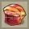
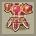
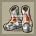
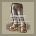
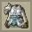

หน้า 257 จากทั้งหมด 296

โพสต์แล้ว:
เสาร์ 27 มิ.ย. 2009 5:58 pmโดย ECO
ขอบคุณคับ
dyed aunt คือป้าย้อมสีไอเทมใช่มะคับ เห็นมีอยู่ทุกเมืองและก็มีราวตากผ้าข้างหลัง
โพสต์แล้ว:
เสาร์ 27 มิ.ย. 2009 11:15 pmโดย ECO
busluv เขียน:อยากรู้ว่าใช้ Groove ฝึกสัตว์เลี้ยงได้ไหม ถ้าได้แล้วขึ้นรัวรึเปล่า
อยากลองเข้าลาน pvp เอานักเวทย์ mag ต่ำ ๆ ไป Groove สัตว์เลี้ยงดู แต่ไม่มีตัว mag ต่ำเลย โดนดอกเดียวก็ตายแล้ว = ='
ลองเอาพระที่จะใช้ Groove ขี่ Pet ที่เพิ่งฝึกดูสิ mag น่าจะต่ำนะ เพราะจะเป็นค่า mag
ของ Pet แล้วลองไป Groove ใส่ Pet อีกตัวดูสิคะ
(( ปล.อยากรู้เหมือนกันค่ะว่าจะขึ้นมั้ย? ))
โพสต์แล้ว:
อาทิตย์ 28 มิ.ย. 2009 10:10 amโดย ECO
Demon Steel ทำไรได้บ้างนิ?

โพสต์แล้ว:
อาทิตย์ 28 มิ.ย. 2009 11:39 amโดย ECO
Dragon Skull ผสมไงหรอครับ
โพสต์แล้ว:
อาทิตย์ 28 มิ.ย. 2009 11:57 amโดย ECO
โพสต์แล้ว:
อาทิตย์ 28 มิ.ย. 2009 12:12 pmโดย ECO
เควสหาก้อนหินต่างๆ
หา SalSteel
Level : 34
Item : Flint 1 ก้อน
เงินรางวัล : 2,800
EXP / Job EXP : 8,814 / 8,814
หา CircleSteel
Level : 39
Item : Frozen Steel 1 ก้อน
เงินรางวัล : 2,800
EXP / Job EXP : 8,814 / 8,814
หา DemonSteel
Level : 34
Item : Demon Steel 1 ก้อน
เงินรางวัล : 3,200
EXP / Job EXP : 11,393 / 11,393
หา LightSteel
Level : 44
Item : Light Steel 1 ก้อน
เงินรางวัล : 3,600
EXP / Job EXP : 14,202 / 14,202
โพสต์แล้ว:
อาทิตย์ 28 มิ.ย. 2009 12:17 pmโดย ECO
เควสทำกล่อง Treasure 12

ไม่รู้กันล่ะซี้ว่ามันมี
โพสต์แล้ว:
อาทิตย์ 28 มิ.ย. 2009 12:29 pmโดย ECO
หมาดำหรอคับ
ของแต่งบ้านจากเทศกาลจะหายไปหลังจบกิจกรรมปะคับ
โพสต์แล้ว:
อาทิตย์ 28 มิ.ย. 2009 12:53 pmโดย ECO
Demon Steel ครบ 10 อันแลก Orge Armor ได้ด้วยนะ.. จำไม่ได้แล้วว่าแลกที่ตัวไหนในเมืองใ้ต้..
Raioh.. นก 4 หลอด
โพสต์แล้ว:
อาทิตย์ 28 มิ.ย. 2009 1:31 pmโดย ECO
-คนหน้าตาดี- เขียน:เควสหาก้อนหินต่างๆ
หา SalSteel
Level : 34
Item : Flint 1 ก้อน
เอก
Salt ป่ะ มะใช่ Sal

โพสต์แล้ว:
อาทิตย์ 28 มิ.ย. 2009 1:32 pmโดย ECO
Donlanai เขียน:Demon Steel ครบ 10 อันแลก Orge Armor ได้ด้วยนะ.. จำไม่ได้แล้วว่าแลกที่ตัวไหนในเมืองใ้ต้..
Raioh.. นก 4 หลอด
เฉพาะในนั้นใช่มะ ถึงว่ารู้สึกแปลกๆ
โพสต์แล้ว:
อาทิตย์ 28 มิ.ย. 2009 1:34 pmโดย ECO
kittiya เขียน:-คนหน้าตาดี- เขียน:เควสหาก้อนหินต่างๆ
หา SalSteel
Level : 34
Item : Flint 1 ก้อน
เอก
Salt ป่ะ มะใช่ Sal
มะก่อน Flint มีชื่อว่า Sal Steel
ส่วน Frozen Steel มีชื่อว่า Circle Steel
ดักแก่ใครป่ะ..
โพสต์แล้ว:
อาทิตย์ 28 มิ.ย. 2009 2:11 pmโดย ECO
เควสกำจัดมอนที่เมือง South Iron City
แร่ SouthDun1F
LV : 34
เป้าหมาย : South Rock 1 ตัว , Mineral Stone 1 ตัว , Tatarabe Rock 1 ตัว
Map : South Dungeon B1F
แร่ SouthDun2F
LV : 34
เป้าหมาย : South Rock 1 ตัว , Mineral Stone 1 ตัว , Tatarabe Rock 1 ตัว
Map : South Dungeon B2F
ล้ม Geego
LV : 39
เป้าหมาย : Geego 1 ตัว
Map : Bed Rock of Soul
แร่ SouthDun3F
LV : 44
เป้าหมาย : South Rock 1 ตัว , Mineral Stone 1 ตัว , Tatarabe Rock 1 ตัว
Map : South Dungeon B3F
SouthDunB1F1
LV : ?
เป้าหมาย : Buri King RX3 10 ตัว , Debustider 5 ตัว , Spell Caster 5 ตัว
Map : South Dungeon B1F
SouthDunB2F1
LV : ?
เป้าหมาย : ZirconIII 30 ตัว , Buri King Cannon 5 ตัว , Buri King Custom 5 ตัว
Map : South Dungeon B2F
SouthDunB3F1
LV : ?
เป้าหมาย : Chimera 5 ตัว , Blocks 5 ตัว , Ramia 5 ตัว
Map : South Dungeon B3F
โพสต์แล้ว:
อาทิตย์ 28 มิ.ย. 2009 2:21 pmโดย ECO
ชุด Level 50 ที่แลกได้ที่ South Iron City
Credits : [GM]เป๊ปเป้
เมื่อนำหิน Flint , Demon Steel , Light Steel อย่างใดอย่างหนึ่งอย่างละ 10 ชิ้น
มาให้ NPC : Ironsmith จะสามารถแลกเป็น Item ได้
Flint 10 ก้อน
[อย่างใดอย่างหนึ่งเท่านั้น]

Flint Kabuto(Red)
คลิกที่นี่ ! เพื่อดูข้อมูล
คลิกที่นี่ ! เพื่อดูรูปตัวอย่าง

Flint Armor
คลิกที่นี่ ! เพื่อดูข้อมูล
คลิกที่นี่ ! เพื่อดูรูปตัวอย่าง

Flint Shoes
คลิกที่นี่ ! เพื่อดูข้อมูล
คลิกที่นี่ ! เพื่อดูรูปตัวอย่าง

Flint Boots
คลิกที่นี่ ! เพื่อดูข้อมูล
คลิกที่นี่ ! เพื่อดูรูปตัวอย่าง
Demon Steel 10 ก้อน

Orge Armor
คลิกที่นี่ ! เพื่อดูข้อมูล
คลิกที่นี่ ! เพื่อดูรูปตัวอย่าง
Light Steel 10 ก้อน

Hunter Iron Armor
คลิกที่นี่ ! เพื่อดูข้อมูล
คลิกที่นี่ ! เพื่อดูรูปตัวอย่าง
โพสต์แล้ว:
อาทิตย์ 28 มิ.ย. 2009 3:08 pmโดย ECO
อ้าว กล่อง 12 นั่นมัน!!!
เมื่อก่อนมันติดบัก(หรือยังไม่มา)นี่นา
ไปทำดูดีกว่า กำลังหาอะไรแก้เซ็งพอดี